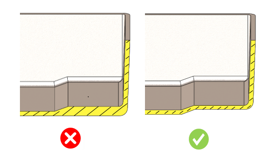

肉厚は、ユーザーが指定した制限値の範囲内である必要があります。
肉厚の急激な変化、鋭いコーナー、6 mmを超える大きな肉厚部は避ける必要があります。厚肉部は金属流動の連続性を乱し、ポロシティや表面不良の発生を助長します。厚肉部は常に中空（コア抜き）にする必要があります。
ダイカストで使用される材料には、アルミニウム、マグネシウム、亜鉛、真鍮があります。アルミニウムダイカストは、軽量性と高い耐熱性を備えているため、自動車部品やギアで最も一般的に使用されています。また、高耐久電子コネクタや通信産業でも広く使用されています。
マグネシウムは、軽量性と耐久性の両方が求められる分野で使用されます。マグネシウム合金は、優れた加工性と良好な寸法精度を備えています。
一般的なガイドラインとして、最小肉厚は 1 mm を超える必要があり、最大肉厚は 5 mm とすることが推奨されます。

注記:
ユーザーは、テーブル内の肉厚設定用のドロップダウンリストから材料を選択できます。このリストには、材料データベースに登録されている材料が表示されます。